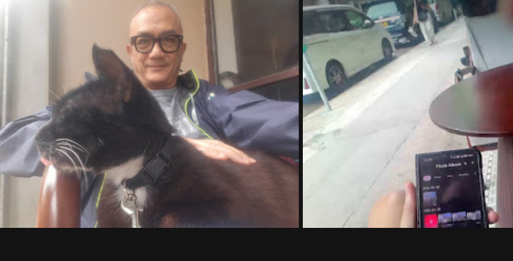
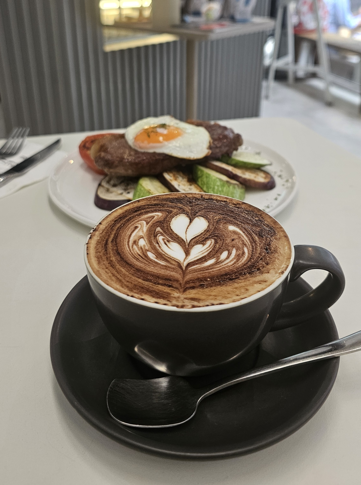
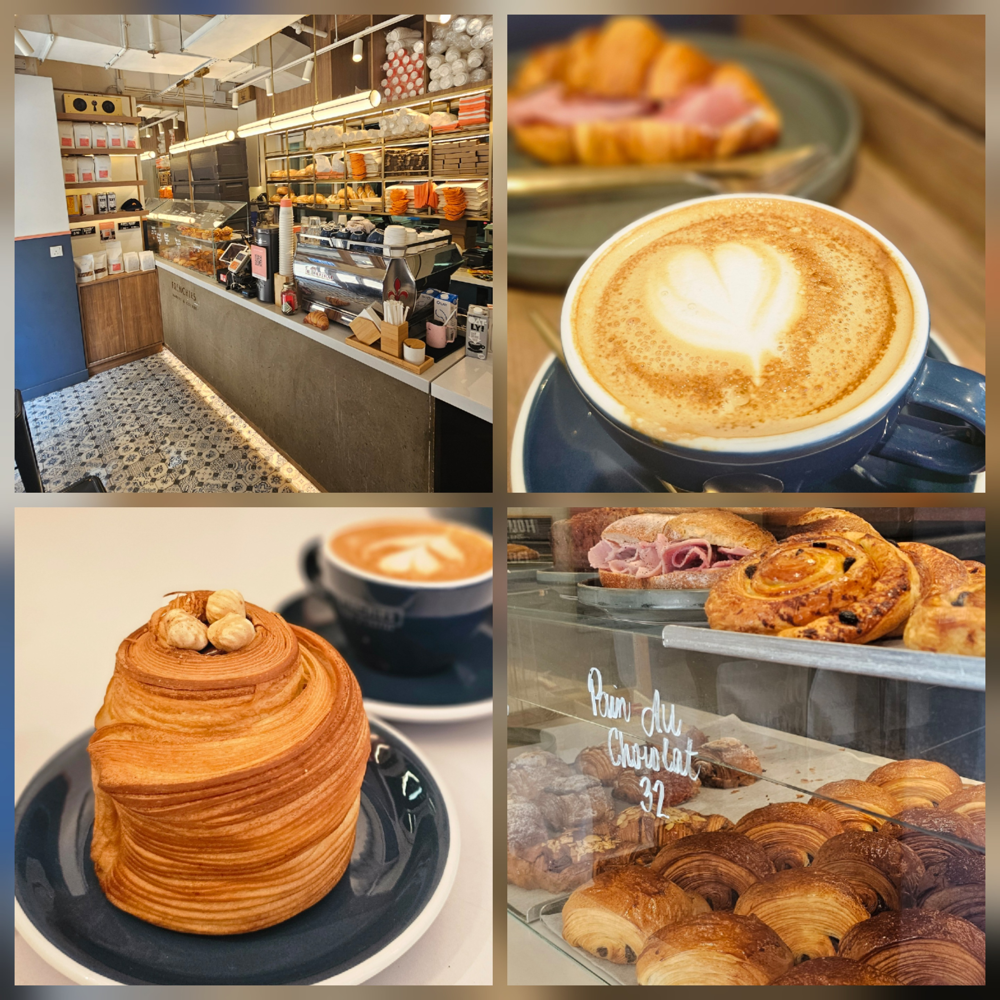
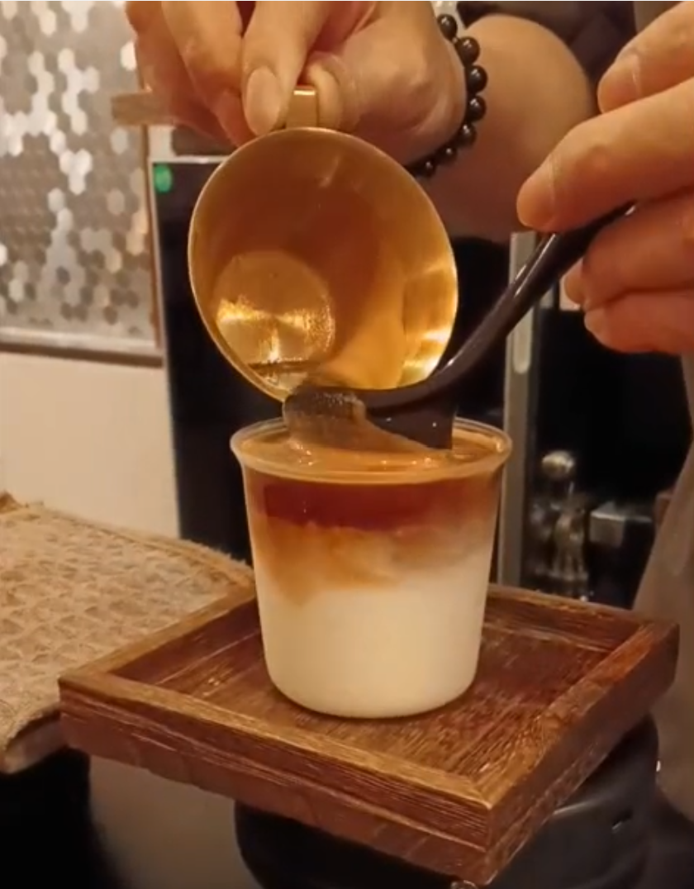

咖啡探店 HK
一小群香港咖啡人，正在建一張值得去的地方地圖。
地圖背後的人
有名有姓，有口碑。他們的推薦都在地圖上。
"Many of the staff I know have left but they managed to keep up the vibe."
試試：Long black, Bacon and Egg Croissant
查看地圖 →"Good coffee and food. Decent prices vs Central and west. High chairs, outdoor area, pet-friendly."
查看地圖 →
"A particularly interesting one is Layback Matters. They let you decide how much you want to pay for your coffee. Yes it is true! And they've got a friendly cat — she climbed to my lap and stayed the whole time. ☕"
查看地圖 →"Well-prepped espresso, good extraction, well balanced, and great Japanese style decor inside. Great little escape in 中環."
查看地圖 →"Ethiopian × Indonesian blend. Proper specialty. 5% off if you run before coffee."
查看地圖 →"Choices of beans, matcha options, solid wifi for working."
試試：Piccolo
查看地圖 →"Good for brunch and formal meetups, decent table space."
試試：Biscoff Cheesecake
查看地圖 →
"Good for brunch. Lunch set Steak & Eggs + Hot Beverage $168 — great value."
查看地圖 →
"Flaky crispy croissants. Convenient to the Escalators."
試試：Cheese & Ham Croissant, Nutella Cruffin
查看地圖 →"The ambience is nice, if you are a fan of coffee places in Central not too far from the Mid-Level Escalators."
查看地圖 →"Tried the one in Central. Stop brewing 30 min before closing — so go when you have time. Pricey but worth it. Always busy, dog friendly. Perfect if you want to just disappear for an hour."
查看地圖 →"Coffee is decent, but the vibe is not for me — a bit too loud, and there are little flies from the open kitchen."
查看地圖 →
"Amazing coffee, roasted, prepared and served by a Q Grader, Coffee Champ. Great place for dates, solo."
查看地圖 →想探索香港咖啡文化？來 WhatsApp 找我們。
加入 Café Hoppers WhatsApp 社群社群新發現
有名有姓的發現，共同的時刻。

第一次聚會 — 5月10日
咖啡跑 · The Station
📍 上環
"Harbour run stretched to Wanchai — Dave hit a personal best. Ice lattes and espresso smoothies waiting at Adrian's café after. Turns out caffeine pulls harder than the finish line."
由 Adrian 主辦
The Station Café →
第二次聚會 — 5月23日
試嗎麥可精選 · Milligram Coffee
📍 中環
"Charcoal latte — smooth, slightly powdery, with a sweet undertone. Canelés fresh from the oven. Six people, two hours, no agenda needed."
Michael, Yin, Emma, Min
Milligram Coffee →Africa Coffee & Tea — 黃竹坑
桌上四款單一產地手沖 ——衣索比亞、烏干達、肯尼亞、盧旺達。大家輪流分享 品嚐，一起喝遍整個非洲大陸。
6月20日 （星期六）上午10:30。 查看地圖 →